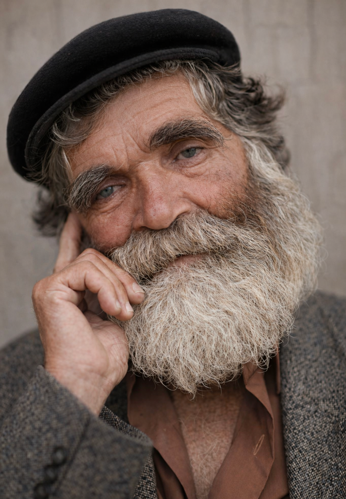

Kijk wat er mogelijk is
Van oud en vergeeld naar levendig en kleurrijk
Dit is wat ChatGPT kan doen met een gewone zwart-witfoto. Gratis, in minder dan een minuut.


Een oude portretfoto, tot leven gewekt in kleur
Voorbeeld 2 komt binnenkort
Voorbeeld 2 komt binnenkort
Binnenkort meer voorbeelden
Voorbeeld 3 komt binnenkort
Voorbeeld 3 komt binnenkort
Binnenkort meer voorbeelden